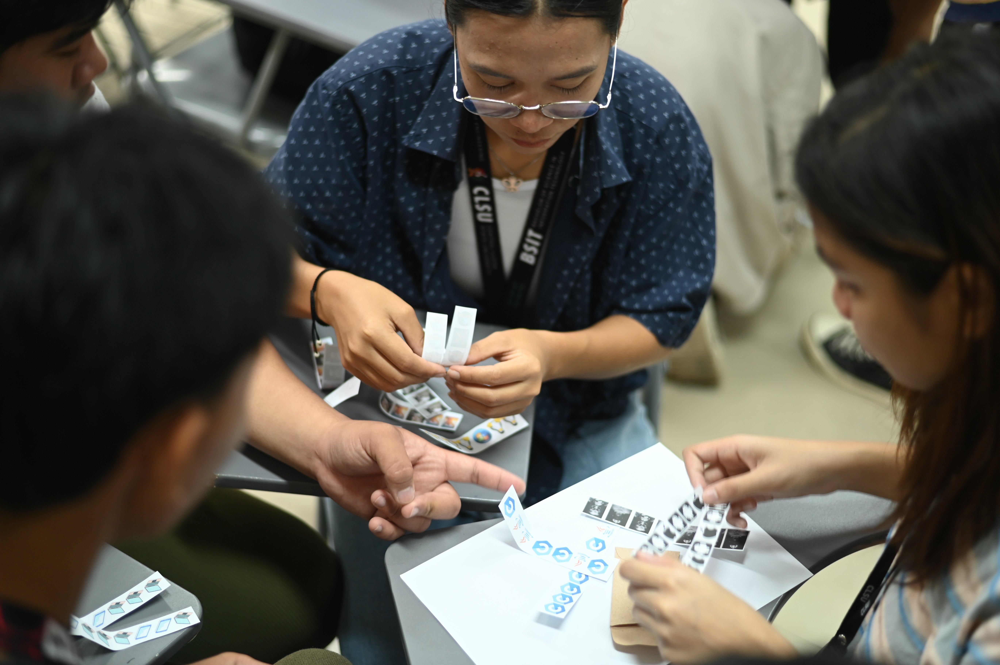

Multimedia Production
IT Fest Coverage
Comprehensive multimedia production including cinematic highlight reels, technical photography, and rapid social media deliverables designed to capture the high-energy environment of IT Fest.
Coverage Details
Neil Jacob Santiago — Production Director
Partner Organization — CLSU Information Technology Student Council (ITSC)
Deliverables — Event documentation, rapid photo editing, and live social media deployment.
Production Gallery & Live Deployment
A mix of native high-fidelity captures alongside the actual published social media engagement.
